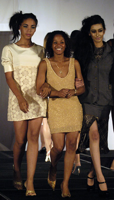

Annia Portuondo Hatch (CUB/USA)
2004 Olympic Team and V Silver Medalist

Portuondo (center) at her 2007 fashion show in New York.
Medal Total
Olympic Games: 2 Silver
World Championships: 1 Bronze
Annia was born on July 14, 1978 in Guantamo, Cuba. She moved to the USA in 1997 and married gymnastics coach Alan Hatch. She became a US citizen in 2001 and began training again. She was a member of the US world championships team in 2003 but tore her ACL the day before the start of the competition. Incredibly, she recovered enough by the following summer and was named to the US Olympic team. After winning 2 silver medals in Athens, Annia studied fashion design. She also coaches.
Competition Results
1988
Ibero-American Championships: 5th AA
1989
China Cup: 6th AA, 3rd V, 3rd B, 3rd FX, 4th UB
Leningrad International: 4th FX
Moscow News International: 33rd AA
1990
Caribbean Games: 1st AA
Cottbus International: 11th AA, 3rd FX
US Olympic Cup: 7th AA
1991
Kosice Cup: 4th AA, 1st V, 4th B, 5th FX
1993
Central American and Caribbean Games: 1st AA, 1st V, 1st UB, 1st B, 1st FX
World Championships: 10th AA, 5th UB
1994
American Cup: 10th AA (prelims)
World Championships (Dortmund): 15th Team (prelims)
1995
Ibero-American Championships: 4th AA, 2nd B, 3rd UB, 5th FX
Pan American Games: 4th AA, 2nd B, 3rd V, 3rd UB, 5th FX
1996
World Championships: 3rd V, 9th FX (semis)
2002
American Classic: 5th AA, 1st V, 4th FX, 5th UB
US Classic: 1st AA, 1st V, 2nd B, 2nd FX, 8th UB
US Championships: 4th AA, 2nd V, 5th FX, 8th UB
2003
American Classic: 1st V
Pacific Challenge: 1st Team, 1st V, 2nd FX, 4th B
US Classic: 7th AA, 1st V, 3rd B, 4th FX
US Championships: 5th AA, 1st V, 6th UB, 8th B, 8th FX
2004
Olympic Games: 2nd Team, 2nd V
US Championships: 1st V
This page was created on June 11, 2010.
© Gymn Forum